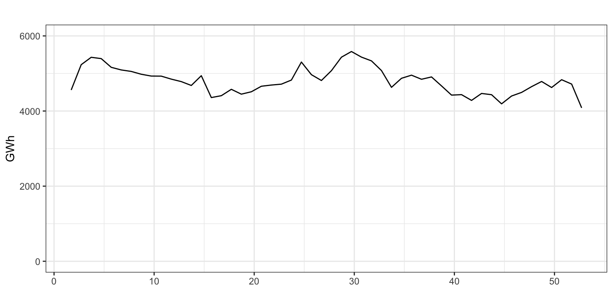
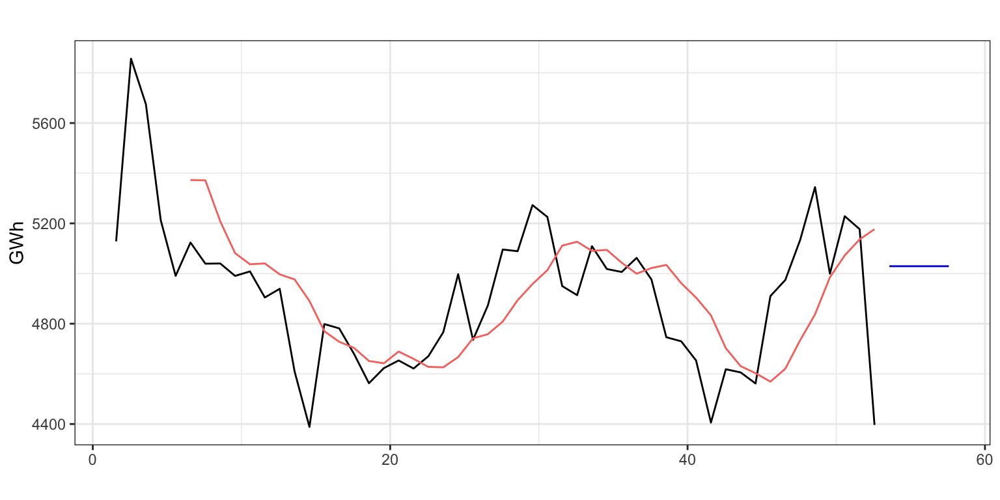

Método de medias móviles
Previsión con Datos Temporales (GBIA)
1 Introducción
Recuerda que ya utilizamos la media móvil en el contexto de la descomposición (Tema 2). Se trataba de una media móvil centrada y se utilizaba para estimar la tendencia de una serie. Vamos ahora a ver con algo más de detalle el concepto de media móvil y como se puede usar para obtener predicciones.
El método de las medias móviles con fines predictivos aparece en los años 20 del siglo pasado (¡hace 100 años!), su uso se generalizó en los años 50 y sigue siendo un método utilizado en determinados campos, donde el fin último es capturar la tendencia a largo plazo de una serie.
Por ejemplo, si pinchas aqui puedes ver el registro del número de muertes diarias (MoMo) que mantiene el Ministerio de Ciencia e Innovación. La línea negra es el número real de muertes y la línea azul es (más o menos) la media móvil de orden 365. La media móvil captura la tendencia en el número de muertes a largo plazo, es decir, cabe esperar que ambas lineas aparezcan siempre cercanas. Si se observa que ambas líneas se separan, debemos pensar que algo está causando un exceso (o defecto) de muertes sobre su valor esperado. Verás que sobre la línea azul (muertes esperadas) en invierno se sobrepone una línea morada que indica el exceso de muertes atribuible a la temperatura (exceso de frío); de la misma forma, en verano se sobrepone una línea roja que indica el exceso de muertes atribuible un exceso de calor.
En bolsa es muy habitual ver gráficos donde junto a la evolución del índice bursátil IBEX-35 se muestra una media móvil de orden alto y otra de orden bajo. Cuando ambas líneas se cruzan, los analistas consideran que es buen momento para comprar (la media móvil de corto plazo pasa encima de la de largo plazo) o vender (la media móvil de corto plazo pasa por debajo de la de largo plazo). Véase la Figura 1.

Si te das cuenta, en ambos ejemplos la media móvil se ha utilizado como señal de alarma –en el primer caso de la presencia de un factor que está generando más o menos muertes de las esperadas, y en el segundo caso de que es buen momento para comprar o vender–, pero no para realizar predicciones. En la actualidad, es poco frecuente el uso de la media móvil con fines exclusivamente predictivos.
Sin embargo, por su sencillez de cálculo y su utilidad para identificar que el entorno de predicción está cambiando, vamos a dedicarles algo de tiempo a las medias móviles.
Hay otra razón pedagógica para ver las medias móviles. Siendo un método muy sencillo, requiere que el investigador determine el valor de un parámetro (el orden de la media móvil). Así, este método establece un puente entre los métodos sencillos vistos en el tema previo –donde no había que fijar el valor de ningún parámetro– y los métodos que veremos en los restantes temas del curso (Temas 5 a 7), donde se verán modelos que requieren la identificación de múltiples parámetros.
Antes de empezar, algunos aspectos adicionales a tener en cuenta. Desde un punto de vista teórico, las medias móviles no pueden capturar la estacionalidad de una serie así que solo se aplican a series que por su naturaleza no tengan esta componente. Además, aunque la metodología de media móvil permite predecir series con tendencia, su uso en este contexto es realmente escaso, poco intuitivo y da resultados muy pobres.
Por último, desde un punto de vista práctico, R no dispone de una función que permita de forma cómoda obtener una media móvil, sus predicciones intramuestrales, las extramuestrales y el error. Solventaremos esta carencia creando nuestra propia función.
2 Media móvil simple
2.1 Definición
El método de la media móvil simple es adecuado para una serie estacionaria y sin estacionalidad. Es decir, una serie que se mueve alrededor de un nivel constante. En este caso, la predicción para un periodo es la media de las \(r\) observaciones previas. El valor \(r\), denominado orden de la media móvil, es un parámetro que debe fijar el investigador.
Definimos primero la media móvil hacia atrás (backward) de orden \(r\) para el periodo \(t\) como la media de las \(r\) últimas observaciones \[mm_t = \frac{1}{r}\sum_{i=0}^{r-1} y_{t-i} = \frac{y_t + y_{t-1} + \ldots + y_{t-r+1}}{r}\] Observa que la media móvil hacia atrás se define de forma diferente a la media móvil centrada que vimos en la descomposición por medias móviles.
A partir de \(mm_t\) se define la ecuación de la predicción intramuestral como \[\widehat{y}_{t+1} = mm_t.\] Podemos entender que \(mm_t\) es una estimación del nivel de la serie en el periodo \(t\) y como la serie es estacionaria (no cambia de nivel), este valor se usa como predicción para el periodo siguiente.
Es decir, la media móvil simple de orden \(r\) usa para predecir el promedio los últimos \(r\) datos. Es un punto medio entre el método Ingenuo I, que para predecir usaba solo el ultimo dato, y la media simple, que promediaba todos los datos.
La primera predicción extramuestral es \(\widehat{y}_{T+1} = mm_T\) y las restantes \(\widehat{y}_{T+h} = \widehat{y}_{T+1}.\)
Observa que:
- Para poder aplicar la media móvil de orden \(r\) se necesitan al menos \(r\) datos.
- Para los \(r-1\) periodos iniciales no es posible calcular la media móvil y, por tanto, para los \(r\) periodos iniciales no es posible obtener una predicción intramuestral.
- El valor de \(r\) debe fijarlo el investigador. Cuanto mayor es su valor, más suave es la linea de predicciones obtenida y menos efecto tiene el valor de una observación individual sobre la predicción (véase la Figura 1). En el caso límite \(r=1\) se tiene el método ingenuo I y para \(r=T\) el método de la media.
Veamos un sencillo ejemplo numérico. La Tabla 1 muestra la aplicación del método de las medias móviles para los 10 últimos datos de la serie Libros. La primera columna indica el año y la segunda el valor de la serie Libros. La tercera columna, mm, es la media móvil de orden 5 y la siguiente columna, Yhat, la predicción de Libros, es decir la columna mm desfasada un periodo. La columna Res (error de predicción) se calcula restando a la serie original (columna Libros) la predicción intramuestral (columna Yhat). Observa que en el proceso se han perdido 5 datos para la predicción y el residuo al inicio de la serie.
| Fecha | Libros | mm | Yhat | Res |
|---|---|---|---|---|
| 2010 | 76206 | NA | NA | NA |
| 2011 | 74244 | NA | NA | NA |
| 2012 | 69668 | NA | NA | NA |
| 2013 | 56435 | NA | NA | NA |
| 2014 | 56030 | 66516.6 | NA | NA |
| 2015 | 61008 | 63477.0 | 66516.6 | -5508.6 |
| 2016 | 59567 | 60541.6 | 63477.0 | -3910.0 |
| 2017 | 60185 | 58645.0 | 60541.6 | -356.6 |
| 2018 | 62180 | 59794.0 | 58645.0 | 3535.0 |
| 2019 | 64154 | 61418.8 | 59794.0 | 4360.0 |
Tu mismo puedes comprobar que
\[mm_{2014} = \frac{76206 + 74244 + 69668 + 56435 + 56030}{5} = 66516.6\]
y la primera predicción extramuestral sería la media de las 5 últimas observaciones
\[\widehat{Libros}_{2020} = mm_{2019} = 61418.8.\]
Date cuenta de que es la primera vez que en un método hay que elegir el valor de un parámetro.
¿Cómo elegirlo? No hay ninguna base teórica que permita saber el valor más adecuado para el orden de la media móvil, hay que fijarlo según criterios empíricos.
2.2 Ejemplo de aplicación con Demanda Eléctrica
Vamos a usar el método de medias móviles para predecir la serie Demanda de electricidad semanal. La Figura 2 muestra que es una serie estacionaria alrededor de un valor medio.
electricidad <- read.csv2("./series/Consumo electrico.csv", header = TRUE)
electricidad <- ts(electricidad[, 2],
start = c(1, 5),
frequency = 7)
#Creamos la serie de consumo semanal
electricidad <- aggregate(electricidad, FUN = sum) autoplot(electricidad,
xlab = "",
ylab = "GWh",
main = "",
ylim= c(0, 6000))
R proporciona varias funciones que permiten calcular la media móvil simple: filter del paquete stats, ts_ma de TSstudio, sma de smooth, ma de forecast o movavg de pracma. Sin embargo, ninguna de estas funciones es tan completa como las vistas en el tema previo y permiten obtener la media móvil, la estimación, la predicción y el error con una sola función.
Para resolver este inconveniente vamos a programar nuestra propia función mmf
mmf <- function(x, r = 3, h = 5) {
z <- NULL
z$x <- x
z$orden = r
TT <- length(x)
inicio <- start(x)
frecuencia <-frequency(x)
z$mm <- stats::filter(x, rep(1/r, r),
side = 1)
z$fitted <- ts(c(NA, z$mm[-TT]),
start = inicio,
freq = frecuencia)
z$mean <- ts(rep(z$mm[TT], h),
start = time(x)[TT] + 1/frecuencia,
freq = frecuencia)
z$residuals <- x - z$fitted
class(z) <- "forecast"
z
}La función mmf precisa de tres argumentos, una serie temporal, el orden de la media móvil \(r\) y el horizonte de previsión \(h\). Los dos últimos argumentos están fijados a 3 y 5 como opciones por defecto. El cálculo de la media móvil se hace mediante la función filter (librería stats), que calcula la media móvil simple. Realmente la función filter calcula una media ponderada, tiene como primer argumento la serie y el segundo argumento son los pesos de la media móvil, es decir \(1/r\) repetido \(r\) veces o rep(1/r, r). El tercer argumento indica si la media es centrada side = 2 (como la usada en el método de descomposición visto en el tema 2) o hacia atrás side = 1.
La función mmf devuelve un objeto que contiene la serie original (x), el orden de la media móvil (orden), la media móvil (mm), la serie ajustada o predicción intramuestral a un periodo vista (fitted), la predicción (mean) y el error de estimación (residuals).
mmelectricidad <- mmf(electricidad, r = 5, h = 5)La Figura 3 muestra la serie Demanda eléctrica (negro), las previsiones intramuestrales (rojo) y las previsiones extramuestrales (azul), que son constantes.
autoplot(mmelectricidad,
xlab = "",
ylab = "GWh",
main = "") +
autolayer(mmelectricidad$fitted) +
theme(legend.position="none")
Podemos ahora obtener los diferentes indicadores de bondad de ajuste del modelo (error de predicción intramuestral) con la función accuracy.
accuracy(mmelectricidad) ME RMSE MAE MPE MAPE MASE ACF1
Training set -25.32394 244.639 179.1574 -0.6787638 3.702664 1.093756 0.4808701El MAPE de 3.7% (o 245 GWh de RMSE) evidencia que las predicciones son bastante adecuadas.
Identificación del mejor modelo
Podemos aplicar el método de la media móvil para diferentes órdenes \(r\) y comprobar para cual de ellos se obtiene el menor valor del criterio de bondad de ajuste deseado. Realizaremos este ejercicio considerando como indicador de bondad de ajuste el MAPE pero en dos escenarios: previsiones intramuestrales a un periodo vista y origen de predicción móvil.
Selección usando previsiones intramuestrales a un periodo vista
La siguiente rutina calcula el MAPE para el método de la media móvil con órdenes desde 1 a 4.
for(r in 1:4) {
error <- accuracy(mmf(electricidad, r = r))[5]
cat("\nPara un orden de",
r,
"el error es",
formatC(error, format = "f", digits = 2),
" %")
}
Para un orden de 1 el error es 3.33 %
Para un orden de 2 el error es 3.40 %
Para un orden de 3 el error es 3.40 %
Para un orden de 4 el error es 3.56 %Podemos concluir que el orden óptimo es 1, donde se alcanza el menor MAPE, es decir el método Ingenuo I. Sin embargo, para órdenes superiores de la media móvil, el error se mantiene igual de reducido.
Selección usando origen de predicción móvil
Dado que nuestro interés está en la calidad de las previsiones, vamos a obtener el MAPE para el método de la media móvil usando origen de predicción móvil. Asumiremos un horizonte de predicción de hasta cuatro semanas y 20 como el mínimo número de semanas necesarias para hacer las estimaciones. Consideremos órdenes desde 1 hasta 4.
k <- 20
h <- 4
TT <- length(electricidad)
s <- TT - k - h
for(r in 1:4){
mapemm <- matrix(NA, s + 1, h)
for (i in 0:s) {
train.set <- subset(electricidad, start = i + 1, end = i + k)
test.set <- subset(electricidad, start = i + k + 1, end = i + k + h)
mmElectricidad <- mmf(train.set, r = r, h = h)
mapemm[i + 1, ] <- 100*abs(test.set - mmElectricidad$mean)/test.set
}
mapemm <- colMeans(mapemm)
cat("\nPara un orden de",
r,
"los errores son",
formatC(mapemm, format = "f", digits = 2))
}
Para un orden de 1 los errores son 2.80 3.80 4.21 5.91
Para un orden de 2 los errores son 3.04 3.54 4.56 6.07
Para un orden de 3 los errores son 3.09 3.86 4.84 6.14
Para un orden de 4 los errores son 3.35 4.29 5.05 6.28Podemos aceptar que con independencia del horizonte temporal de previsión, el orden \(r = 1\) (Ingenuo I) podría ser el más adecuado. Sólo para una previsión a dos semanas vista el orden 2 parece ser superior. En todo caso, en este ejemplo la calidad de las previsiones es relativamente independiente del orden de la media móvil.
Prueba a repetir los ejercicios de identificación del mejor modelo esta vez usando como criterio el RMSE. ¿Qué concluyes? ¿Coinciden tus conclusiones con las obtenidas usando el MAPE?